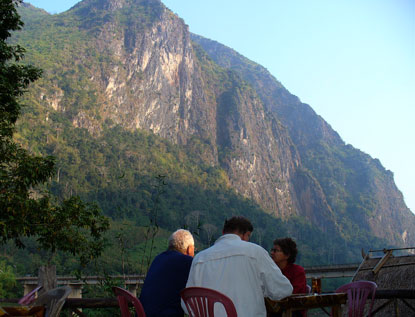
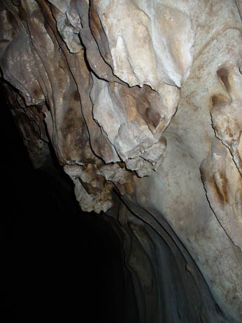
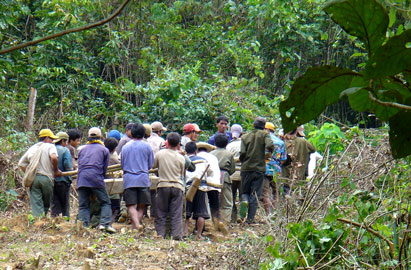

November 23, 2005
Hi Folks,
 Just arrived in Phonsavan, Xieng Khuang, Laos, the target of most of the bombs dropped between 1964 and 1973.
But first more sights of Laos. Possibly the most bizarre was seeing and hearing hundreds of termites on the jungle floor, bobbing up and down and clicking in unison. Our trek guide thought it might be a territorial thing between the black and the white termites.
Slash and burn in this region means growing crops for a short time, abandoning the field for several years, then returning to the same area, to burn the overgrowth and start all over. And the straw left over after rice harvest has to be burned, so smoke permeates the air throughout in S.E.Asia now that the rice harvest is nearing the end.
Nong Khiaw is located in the center of Northern Laos. Boat trips can be arranged down to the old capital of Luang Prabang, or up to the northeastern part of Laos, which borders Vietnam and China. The road runs east to Vietnam and I met travelers that had entered Laos at that entry point. But I also heard a group of German cyclers rode all the way to the border and were turned away. It is always safest to check with officials, and then check again if you are doing anything unusual.
 The calling card for Nong Khiaw is the beautiful setting amongst Karsk outcroppings, caves, people, and village life. Unfortunately the weather did not cooperate with my trip, as it was cloudy and cool upon my arrival, and stayed that way until the morning I left. Walked less than 2 miles up to the three Tham Pha Tok caves where people lived during the war years. Found huge rooms in the first cave, with signs designating how each room was used. Discovered that a digital camera with flash does a nice job recording features on the cave walls. Other than the crude signs and a wooden staircase leading to the entrance of the first cave, no tourist facilities are located at these caves, so one must bring a flashlight. Two small LED key chain lights were sufficient after my eyes became accustomed to the dark.
While walking up the road to the caves, the sound of many voices starting and stopping in unison could be heard. Turned out to be a work crew moving a new 45-foot long reinforced-concrete telephone pole up a path, a few feet at a time, without any mechanical aid. The next morning I noted that the power was out all over the village, and had not been restored by the time my bus left for Luang Prabang. Improved electrical service is sure to follow!
Hope you all have a great Thanksgiving!
Bill
============================================
Love to hear from you, but please do not repeat my email (nor photos) in your reply. That volume exceeds my limit, and suspends all messages.